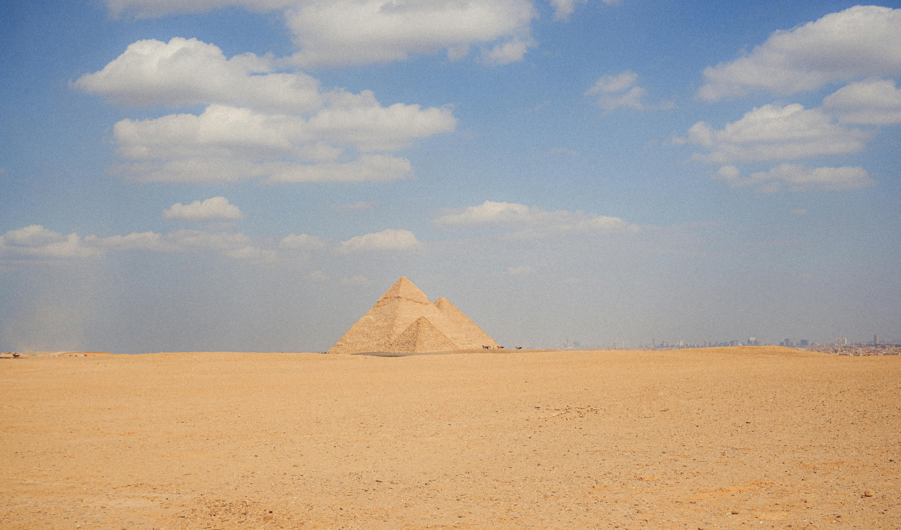
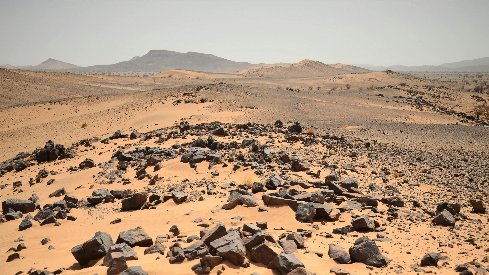
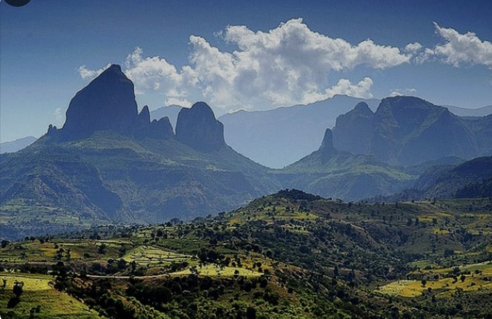
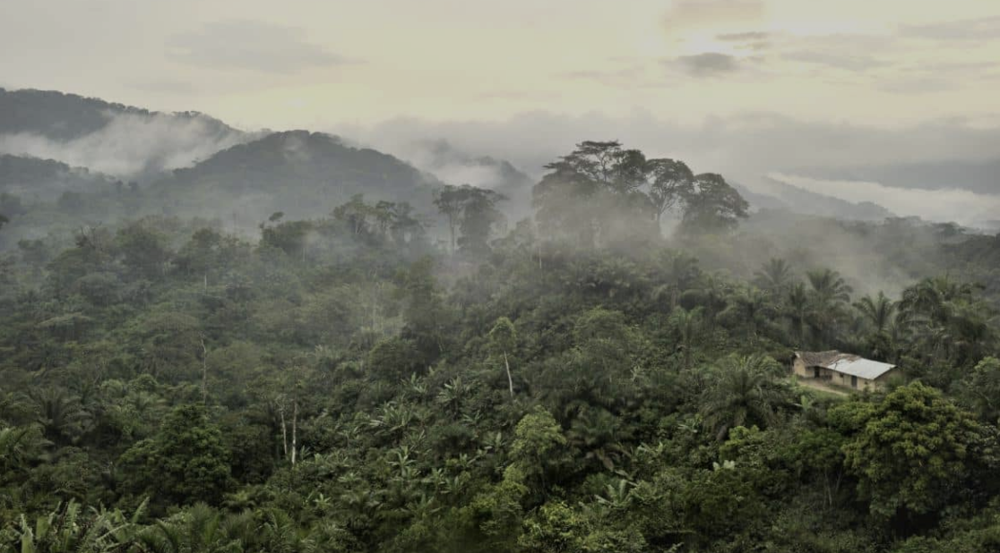
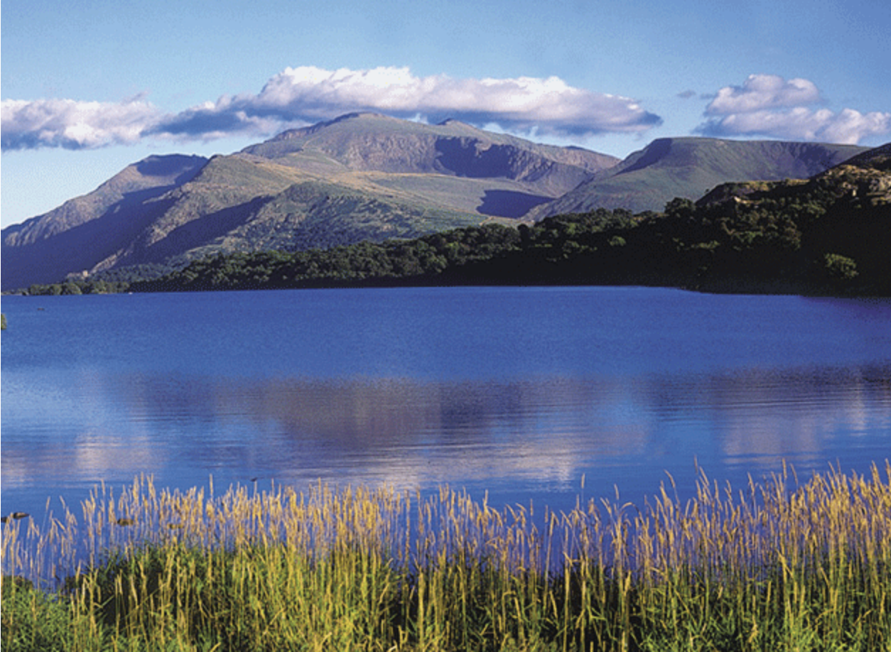
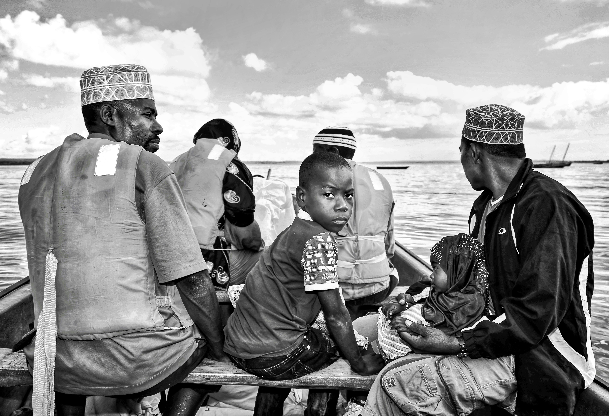

Africa
Geography
Africa, the second-largest continent, is surrounded by the Mediterranean Sea, Red Sea, Indian Ocean, and Atlantic Ocean. The Equator divides it almost evenly. The continent is made up of eight major physical regions: the Sahara, Sahel, Ethiopian Highlands, savannas, Swahili Coast, rainforests, African Great Lakes, and Southern Africa, each hosting unique ecosystems.
Sahara
The Sahara, the world's largest hot desert, spans 8.5 million square kilometers, covering 25% of Africa. Its features include ergs (sand dunes), regs (gravel plains), hamadas (rock plateaus), and oases that support human life. Flora and fauna have adapted to the desert's arid conditions, such as camels conserving water and deep-rooted plants surviving scarce rainfall.
Sahel
The Sahel is a semi-arid zone between the Sahara and the savannas. Stretching 5,400 kilometers, it faces desertification due to climate change, overgrazing, and deforestation. Its vegetation appears briefly during the rainy season, supporting drought-resistant species like baobabs and zebu cattle. Political instability hampers conservation efforts in the region.
Ethiopian Highlands
The Ethiopian Highlands, home to 80% of Africa's tallest mountains, were formed by ancient volcanic activity. Unique wildlife like the endangered Ethiopian wolf and gelada baboon thrive here. Native plants include the Ethiopian rose and ensete, a banana-like plant. Human encroachment threatens local ecosystems.
Savannas
Savannas cover nearly half of Africa and are dominated by grasslands. The Serengeti Plains, renowned for their wildlife, host annual wildebeest migrations that rejuvenate the ecosystem. Ecotourism thrives here, but agricultural expansion threatens these grasslands.

Swahili Coast
The Swahili Coast stretches 2,900 kilometers along Kenya, Tanzania, and Mozambique. Its coral reefs and mangrove forests support limited wildlife like bush babies and elephant shrews. The region has long been a hub for trade, with major ports like Mombasa and Dar es Salaam.

Rainforests
Africa's rainforests boast immense biodiversity, including gorillas, forest elephants, and okapi. They also feature unique plants, with many endemic species. Indigenous groups like the Mbuti and Twa have lived sustainably in the rainforests for centuries, though their way of life faces increasing threats.
African Great Lakes
The African Great Lakes, formed by tectonic activity, are vital ecosystems and water sources. Lakes like Victoria and Tanganyika support diverse aquatic life, including fish species like Nile perch and cichlids. However, invasive species threaten local habitats, and the lakes serve as key resources for hydroelectric power.
Southern Africa
Southern Africa, dominated by ancient bedrock, is rich in wildlife and plant diversity. Its reserves protect species like lions, rhinos, and gazelles, while generating jobs and revenue. The Cape Floral Region, home to 20% of Africa's flora, is a global biodiversity hotspot.

Ecology
Biodiversity
The continent of Africa is renowed for its flourshing biodiversity. It is home to the "Big Five" animals: lions, leopards, rhinoceroses, elephants, and Cape Buffaloes. The reason these animals are called the "Big Five" is because they are extremely dangerous, and early hunters could not hunt them on foot.
Click the image below to reveal a fun fact:
In addition, the continent contains vast savannah ecosystems that are home to some of the largest land animal populations in the world. Unique flora like the majestic baobab tree, often called the "tree of life," and drought-resistant acacias play a crucial role in maintaining the ecological balance of these regions.
Ecosystems
Africa's major ecosystems are not only diverse, but they are also extremely striking. The Congo Basin houses one of the largest rainforests on Earth, providing a habitat for gorillas, forest elephants, and an array of plant species. This rainforest is also known as one of the largest carbon sinks, meaning that the diverse tree species and other vegetation are harboring up to 30 billion tons of carbon.
The vast Sahara Desert, while seemingly barren, supports resilient species like the fennec fox and hardy plants such as date palms, all adapted to its extreme conditions. Underground water sources, or oases, are vital lifelines in this arid expanse, sustaining diverse microhabitats where grasses and shrubs can flourish. Even the shifting sands of the Sahara are home to creatures like sandfish lizards and scorpions, which showcases extraordinary evolutionary adaptations in order to survive one of the harshest environments.
Grasslands and savannas are among Africa's most iconic ecosystems, covering vast stretches of the continent and playing a critical role in supporting its biodiversity. These open landscapes are characterized by their grasses, scattered trees, and seasonal rainfall. One of the most remarkable phenomena in these ecosystems is the massive migrations of land animals, such as wildebeest, zebras, and gazelles, which traverse the savannas in search of fresh grazing grounds and water during seasonal shifts.
Conservation
Conservation efforts in Africa are targeted towards protecting endangered species like mountain gorillas, cheetahs, and African wild dogs, which face numerous threats. Deforestation driven by agricultural expansion and urban development, as well as poaching for ivory and bushmeat, continue to challenge the preservation of Africa's unique ecosystems.
Africa's Culture
The continent of Africa is home to a diverse array of populations that have been influence by external factors. Each country is known for having its own tribes, languages, and cultural differences. Even the smallest countrys such as Uganday contain more than 30 established tribes.
Select a dropdown below to learn more about Africa's Culture!
Famous African Tribes
The Zulu people, South Africa's largest ethnic group, primarily reside in the province of KwaZulu-Natal, with a population of around 10-11 million. Under apartheid in the 19th and 20th centuries, the Zulu faced significant discrimination and were considered third-class citizens. Today, they enjoy equal rights and continue to contribute to South Africa's diverse cultural heritage.
The Maasai people inhabit the Rift Valley region of Kenya and Tanzania, maintaining a lifestyle centered on their large herds of cattle, sheep, and goats. Cattle play a vital role in Maasai society, symbolizing wealth and power, with an individual's status often determined by the size of their herd. Their nomadic practices and deep cultural pride make the Maasai a fascinating and resilient tribe.
In the Omo River Region of southwestern Ethiopia, over fifty unique tribes preserve their traditional customs and beliefs. The area's isolation has helped protect these cultural practices, offering visitors a rare glimpse into the rich diversity of African tribal life. This region is a vibrant hub for those interested in exploring traditional African cultures.

African Food
In many Eastern, Western, and Southern African villages, farming is the primary way of life, with people relying almost entirely on the food they grow themselves. Outdoor markets are common, where traditional African foods are sold, reflecting the close connection between communities and their agricultural practices.

Different regions of Africa have distinct culinary traditions. In North African countries like Morocco and Algeria, couscous is a staple dish, often served with meat and vegetables. In Western Africa, common crops such as cassava, maize, millet, and plantains form the basis of many meals, showcasing the diversity of African cuisine.
Cultural traditions heavily influence cooking practices, with women and girls often responsible for preparing meals. Colonization has also left its mark on African food and drink; for example, in Kenya, tea is a popular beverage introduced during British rule. These influences blend with traditional practices to create a unique and varied food culture across the continent.
African Languages
Africa is home to thousands of indigenous languages and dialects, with each country, even the smallest, having its own linguistic diversity. Due to Africa's colonial history, many people also speak Creole or Pidgin versions of European languages like English, Portuguese, or French. In Northern Africa, Arabic is widely spoken, while Swahili serves as the dominant language in East Africa, highlighting the continent's rich and varied linguistic heritage.
